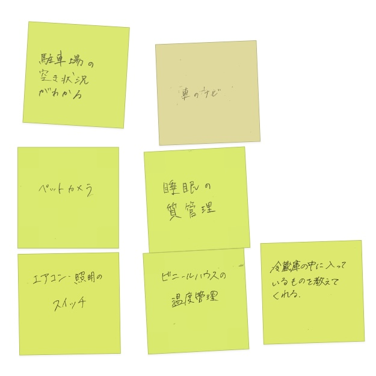
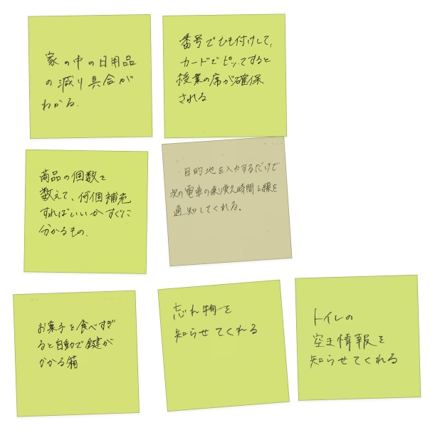
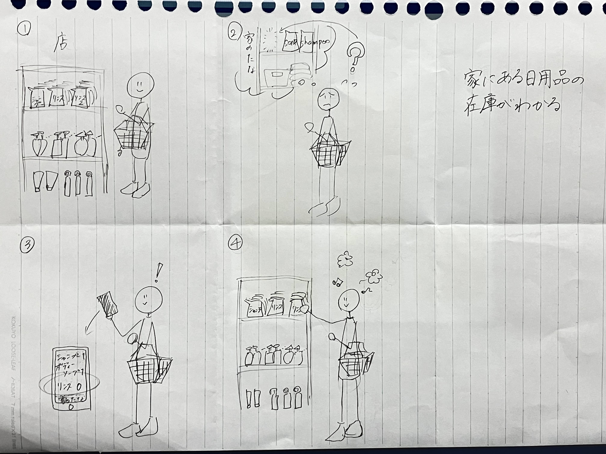

IoTについて
＜IoTとは＞
・Internet of thingsの略
・あらゆるものをインターネットに接続することで、離れた場所から対象物を計測したり制御したりといったことや、もの同士の通信を可能にする技術。
・もの（デバイス）に取り付けられたセンサーによって収集された情報をサーバー上で処理・変換・分析する。
→情報を見える化することで人に新しい気づきをもたらしてくれる。
＜実際にIoTが使われているもの、場所＞

＜IoTで何ができそうか？＞
- グループワークで出たアイデア

- アイデアのスケッチ

買い物をしていて、何を買うのかわからなくなったときに、家にある日用品の在庫を教えてくれる。